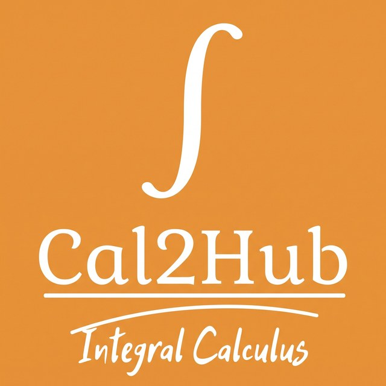

Embedded Systems
Microcontrollers, code troubleshooting, and component integration.
 C++
C++ESP32
 Arduino Uno
Arduino Uno
Hi, I'm Harwyn Lance Arabi — a fourth-year Computer Engineering student exploring software development, web technologies, and embedded systems.

I'm studying Computer Engineering at ICCT Colleges – Cainta, where I explore how software and hardware can work together to solve real problems.
I've contributed to an interactive calculus learning app and an assistive communication device. I enjoy coordinating work with teammates, troubleshooting embedded code, connecting components, and growing my front-end development skills.
A growing toolkit across embedded systems and front-end development.
Microcontrollers, code troubleshooting, and component integration.
Building foundational skills in web structure, styling, and interactivity.
Programming fundamentals, Android and game development, and version control.
Keeping work organized, coordinating tasks, and monitoring progress.
Team projects where learning, collaboration, and problem-solving meet.
No projects match that search. Try another keyword.

An offline interactive learning application designed for engineering students studying Integral Calculus.

An embedded-based augmentative and alternative communication (AAC) device designed to help people with aphasia communicate daily needs.
Components: LEDs, buzzer, pushbuttons, LCD, DFPlayer Mini, speaker, and vibration motor.
Loading GitHub data…
November 2022 – March 2026. Designed print layouts, prepared print-ready files, operated printing equipment, and handled customers and orders.
Joji
“‘Blah Blah’ by Joji is one of my favorite songs because I can relate to its emotions and the feelings it expresses. It reminds me of how difficult it can be to hold on to something or someone you care about, even when things are not going the way you hoped. I love how Joji’s music captures feelings that are sometimes hard to explain in words. For me, the song is a reminder that even when life gets confusing and emotionally exhausting, I have to keep going and learn when to hold on and when to let go.”
I'm continuing to learn and explore opportunities in software and IT. Feel free to connect or check out my work.